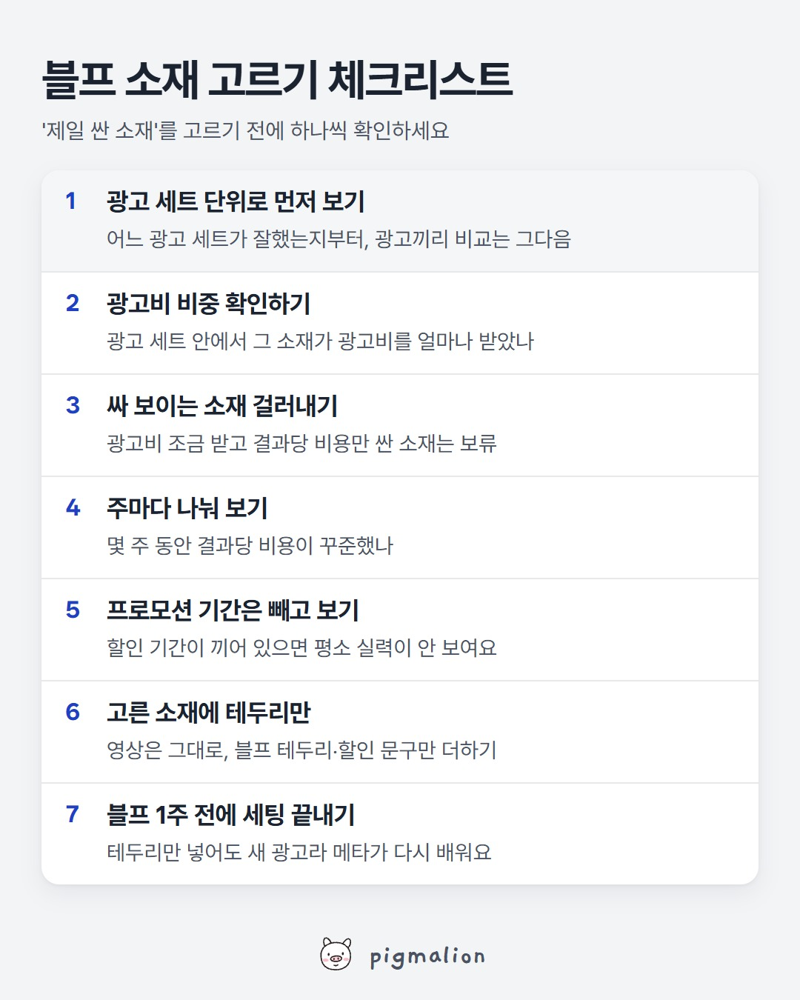

블프 소재 고르기 체크리스트
저장해두고 성과가 떨어질 때 위에서부터 확인하세요

이미지를 길게 누르면 저장돼요
메타 공식 도움말로 보는 자세한 내용
왜 적게 쓴 광고가 싸 보일까요
메타 게재 시스템은 결과를 가장 많이 낼 수 있는 기회를 먼저 찾아요. 비용이 낮은 기회를 다 쓰고 나면 더 비싼 기회를 쓰기 때문에, 광고비를 더 쓸수록 결과당 비용이 오를 수 있어요. 그래서 광고비를 조금만 받은 광고는 아직 싼 기회만 쓴 상태라 결과당 비용이 낮아 보이기 쉬워요.
메타가 '분석 데이터 효과'라고 부르는 것
메타가 성과 나쁜 쪽에 돈을 쓰는 것처럼 보이는 오해를 말해요. 메타 공식 예시에서는 페이스북 스토리가 첫날 결과당 비용이 더 쌌지만, 시스템이 페이스북 쪽 비용이 더 빨리 오를 걸 예측해 인스타그램 스토리에 450달러, 페이스북 스토리에 50달러를 썼어요. 최종 표만 보면 페이스북 스토리가 더 싸 보여요(1.10달러 대 1.46달러). 하지만 페이스북에 돈을 더 썼다면 더 비싸졌을 거라고 설명해요.
(이 예시는 노출 위치 비교예요. 한 광고 세트 안의 광고끼리도 같은 원리가 적용돼요.)
메타가 권하는 평가 방법
- 한 광고 세트에 광고를 여러 개 돌릴 때: 광고 세트 수준에서 평가
- 어드밴티지+ 캠페인 예산을 쓸 때: 캠페인 수준에서 평가
- 시간대별처럼 잘게 나눈 데이터로 판단하지 않기
'꾸준한 소재'의 기준은 제 기준이에요
광고비를 많이 받고 몇 주 동안 결과당 비용이 크게 흔들리지 않은 소재를 고르는 건 메타 공식 규칙이 아니라 제 실무 기준이에요. 프로모션 기간이 끼어 있으면 그 기간은 빼고 보세요.
출처: Meta 비즈니스 지원 센터 「광고 성과의 변동 이해하기」, 「시스템에서 광고할 때의 '분석 데이터 효과' 정보」
AI 프롬프트
■ 어디에: 챗GPT, 클로드, 제미나이 중 아무거나 (무료 버전도 돼요)
■ 무엇을: 메타 광고 관리자의 광고별 성과 표
■ 어떻게:
- 광고 관리자 → "광고" 탭으로 이동
- "열"에서 광고 세트 이름, 지출 금액, 결과, 결과당 비용, 노출이 보이게 하기
- 기간은 최근 4주 (프로모션 기간이 끼어 있으면 빼고 고르기)
- 표 위 "분석 데이터" 버튼 → 시간 → "주"를 고르면 주마다 나눠서 볼 수 있어요
- 표를 드래그해서 복사(Ctrl+C)하거나 "내보내기"로 CSV 받기
- AI 새 대화에 아래 프롬프트를 "복사" 버튼으로 복사해 붙여넣고, 맨 끝 자리에 표를 붙여넣기
- 엔터. 블프에 쓸 만한 소재와 피할 소재가 나와요
너는 메타 광고를 운영하는 퍼포먼스 마케터야.
블랙프라이데이 같은 할인 행사에 쓸 소재를 고르려고 해. 아래에 광고별 성과 표를 붙여넣을게.
참고할 사실 (메타 공식 도움말 기준):
- 메타 게재 시스템은 비용이 낮은 기회부터 먼저 쓰고, 그걸 다 쓰면 더 비싼 기회를 써. 그래서 광고비를 적게 받은 광고는 결과당 비용이 싸 보이기 쉬워.
- 한 광고 세트에 광고를 여러 개 돌리면, 결과는 광고 세트 단위로 보는 게 정확해 ('분석 데이터 효과').
이 순서로만 봐줘.
1) 광고 세트별 정리: 광고 세트마다 전체 지출, 결과, 결과당 비용을 먼저 정리해줘.
2) 광고비 비중: 각 광고 세트 안에서 광고마다 지출이 몇 %인지 계산해줘.
3) 블프 후보: 광고 세트 안에서 지출 비중이 크고, 주마다 결과당 비용이 크게 흔들리지 않은 광고를 1~3개 골라줘. 이유는 한 줄씩.
4) 조심할 광고: 지출 비중이 작은데 결과당 비용만 싸 보이는 광고는 "싸 보이는 소재"로 따로 표시해줘. 이 광고를 블프에 쓰고 싶다면 무엇을 더 확인해야 하는지도.
5) 블프 버전 아이디어: 고른 소재마다 원래 영상은 그대로 두고 블프 테두리나 할인 문구만 더하는 아이디어 1개씩.
숫자가 부족해서 판단 못 하는 부분은 "판단 보류"라고 따로 적고, 추측은 추측이라고 써줘.
[여기에 광고별 성과 표 붙여넣기]